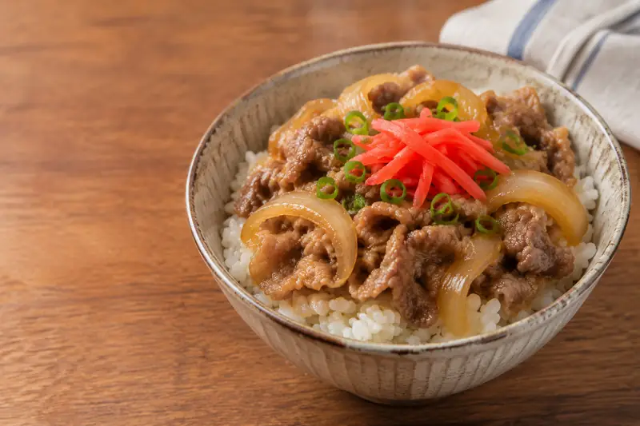

Staple主食 · Japanese日
Japanese Beef Bowl (Gyudon)日式牛丼
The signature of Japan's fast-food chains, and better at home. Onion softens in a sweet-savoury dashi and soy broth, paper-thin beef cooks in it in moments, and it all goes over hot rice with the juices. Thin beef is everything: frozen shaved beef, or ribeye firmed in the freezer and sliced.日本街头快餐店的招牌，在家做更香。洋葱在甜咸的高汤酱油里煮软，放入极薄的牛肉片一烫就好，连汁盖在热米饭上。关键是牛肉要薄，Costco 冷冻的肥牛卷或自己把肋眼冻硬切片都行。

Ingredients食材
- Ribeye steak肋眼牛排 400 g · 400 g ribeye or shaved beef, sliced paper-thin肋眼牛排或肥牛片 400 克，切极薄片 freeze an hour until firm before slicing冻 1 小时到半硬再切
- Onions洋葱 200 g · 1 medium onion, sliced 5 mm1 个中等洋葱，切 5 毫米丝
- Dashi powder日式鲣鱼高汤粉 3 g · 1 tsp dashi powder日式高汤粉 1 茶匙
- Soy sauce生抽 45 g · 2.5 tbsp2.5 汤匙
- Mirin味啉 45 g · 3 tbsp3 汤匙
- Shaoxing wine料酒(绍兴) 30 g · 2 tbsp (sake is more authentic)2 汤匙（清酒更地道）
- Sugar白糖 12 g · 1 tbsp1 汤匙
- Ginger姜 10 g · a small piece, cut in fine strips1 小块，切丝
- Short-grain rice短粒米(寿司米) 300 g · 1.5 cups short-grain rice (about 300 g raw), cooked短粒米 1.5 杯（约 300 克生米），煮好
- Green onions大葱/小葱 10 g · 1 stalk, sliced1 根，切葱花
Weights are as bought, before trimming or peeling. Costco pack sizes and availability vary; see each ingredient page.重量为买回来的原重（去皮去骨之前）。Costco 规格与有无随时变化，点食材名看详情。
Method做法
- Bring 250 mL water, the dashi powder, soy, mirin, wine and sugar to a boil in a wide pan.锅里放 250 mL 水、高汤粉、生抽、味啉、料酒和糖，烧开。
- Add the onion and ginger and simmer 5 minutes until the onion is soft and translucent.放洋葱和姜丝，中小火煮 5 分钟到洋葱变软透明。
- Shake the beef slices apart into the broth.把牛肉片一片片抖散放进汤里。
- Cook 2 minutes until the beef changes colour and skim off any scum.煮 2 分钟到牛肉变色，撇掉浮沫。
- Top bowls of hot rice with the beef and onion, spoon over the broth and add the green onion.热米饭盛碗，盖上牛肉洋葱，浇两勺汤汁，撒葱花。
Keys to success成功要点
- The thinner the beef the more tender; thick slices toughen as they simmer, unlike a stir-fry.牛肉越薄越嫩，厚片一煮就老，这是和中式炒牛肉最大的不同。
- Soften the onion before the beef so its sweetness goes into the broth.洋葱先煮软再放肉，洋葱的甜味会融进汤里。
- Be generous with the broth; rice soaked in it is the point.汁要多一点，渗进米饭才是牛丼的味道。
Common problems常见失败与补救
- The beef is tough牛肉又老又硬
Too thick or cooked too long. Turn off the heat as soon as it changes colour and let carry-over heat finish it.切太厚或煮太久。牛肉变色马上关火，余温会把它烫熟。 - Too sweet太甜
Mirin sweetness varies; next time halve the sugar and add a little more soy.味啉各品牌甜度不同，下次糖减半，再多加一点生抽平衡。
Watch it done视频参考
Just One Cookbook's guide to classic gyudon; four minutes.Just One Cookbook 的经典牛丼，4 分钟。
A Japanese chef's gyudon in English; four and a half minutes, over 1.7 million views.日本厨师的英文牛丼教学，4 分半钟，播放一百七十多万。
Videos load only when you tap them (youtube-nocookie). Creators are credited; we do not host their videos.点了才加载视频（youtube-nocookie）。署名原作者，本站不托管视频。
Nutrition营养
| Energy热量 | 681 kcal |
| Protein蛋白质 | 34.2 g |
| Fat脂肪 | 15.5 g |
| of which saturated其中饱和脂肪 | 6.4 g |
| Carbohydrate碳水化合物 | 93.1 g |
| Fibre膳食纤维 | 4.1 g |
| Sodium钠 | 1197 mg |
High sodium钠偏高 Sodium tiers: under 345 mg lower, 345-689 mg moderate, 690 mg and above high (this site's tiers; 15% of the 2,300 mg daily reference = 345 mg).钠分档：低于 345 mg 较低，345–689 mg 中等，690 mg 及以上偏高（本站分档；345 mg ＝ 每日参考 2300 mg 的 15%）。
Computed from the Canadian Nutrient File (Health Canada) with the weights above; oil and sauces are counted in full. Real dishes differ.按加拿大营养素数据库和上面的重量计算；油和酱汁按全量计入，实际会略低。
Good to know适合 / 需注意
- About 34.2 g protein per serving, a protein-rich meal (adult reference intake roughly 50-60 g/day; needs vary).每份蛋白质约 34.2 g，属于蛋白质较高的一餐（成人每日参考量约 50–60 g，个体差异大）。
- About 1197 mg sodium per serving (about 52% of the 2,300 mg daily reference), on the high side; use less soy sauce or salt, and pair with unsalted sides.每份钠约 1197 mg（约占每日参考 2300 mg 的 52%），偏高；少放酱油或盐，或搭配无盐主食与蔬菜。
- About 93.1 g carbohydrate per serving, plenty; adjust the staple portion to your activity.每份碳水化合物约 93.1 g，较多；按活动量调整主食份量。
- Contains allergens: Fish, Soy, Wheat / gluten.含过敏原：鱼、大豆、小麦/麸质。
Rice and beef in one bowl; add miso soup or greens for balance, and leaner beef such as sirloin lightens it.一碗有主食和牛肉，搭味噌汤或一份青菜更均衡；肋眼脂肪多，用牛里脊会清淡些。